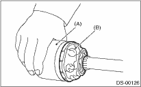

NOTE:
Use specified grease.
BJ, EBJ side:
NTG2218-M (Part No. 28395AG010)
DOJ side:
NKG205 (yellow) (Part No. 28495AG000)
1. Install the BJ or EBJ boot to the specified position, and fill it with 60 to 70 g (2.12 to 2.47 oz) of specified grease.
2. Place the DOJ boot at the center of shaft.
3. Wrap vinyl tape around the spline part of shaft.
4. Insert the DOJ cage onto shaft.
CAUTION:
The cage has a set orientation. Insert the cage with the cutout portion facing the shaft side.
|
(A) |
Cage |
|
(B) |
Cutout portion |
5. Install the DOJ inner race on shaft and fix the snap ring in place with pliers.
CAUTION:
Confirm that the snap ring is completely fitted in the shaft groove.
6. Install the removed cage, to the inner race fixed onto the shaft.
NOTE:
Fit the cage with the protruding section aligned with the track on the inner race, and turn by a half pitch.
|
(A) |
Inner race |
|
(B) |
Cage |
7. Fill 80 to 90 g (2.82 to 3.17 oz) of specified grease into the inner side of the DOJ outer race.
8. Apply a thin coat of specified grease to the cage pocket and six ball bearings.
9. Insert the six ball bearings into the cage pocket.
10. Align the outer race track and ball positions, and place the shaft, inner race, cage and ball bearings in the original positions, and then fix outer race in place.

|
(A) |
Outer race |
|
(B) |
Grease |
11. Install the circlip in the groove on the DOJ outer race.
CAUTION:
• Make sure that the balls, cage and inner race are firmly fitted in the outer race of the DOJ.
• Take care not to place the matching position of the circlip in the ball groove of outer race.
• Pull the shaft lightly to make sure that the circlip is completely fitted in the groove.

12. Apply an even coat of the specified grease [20 to 30 g (0.71 to 1.06 oz)] to the entire inner surface of boot. Also apply grease to the shaft.
13. Install the DOJ boot taking care not to twist it.
NOTE:
• The inside of the larger end of DOJ boot and the boot groove is to be cleaned so as to be free from grease and other foreign matter.
• When installing the DOJ boot, position the outer race of DOJ at center of the stroke.
14. Put a new band through the clip and wind twice in the band groove of the boot.
15. Pinch the end of band with pliers. Hold the clip and tighten securely.
CAUTION:
When tightening the boot, exercise care so that the air within the boot is appropriate.
16. Tighten the band using the ST.
| ST 925091000 | BAND TIGHTENING TOOL |
CAUTION:
Tighten the band until it cannot be moved by hand.
17. Tap the clip with the punch provided at the end of the ST.
| ST 925091000 | BAND TIGHTENING TOOL |
CAUTION:
Tap to an extent that the boot underneath is not damaged.

18. Cut off the band with an allowance of about 10 mm (0.39 in) left from the clip and bend this allowance over the clip.
CAUTION:
Make sure that the end of the band is in close contact with clip.
19. Install BJ or EBJ boot in the same manner.
20. Extend and retract the DOJ repeatedly to provide an equal coating of grease.